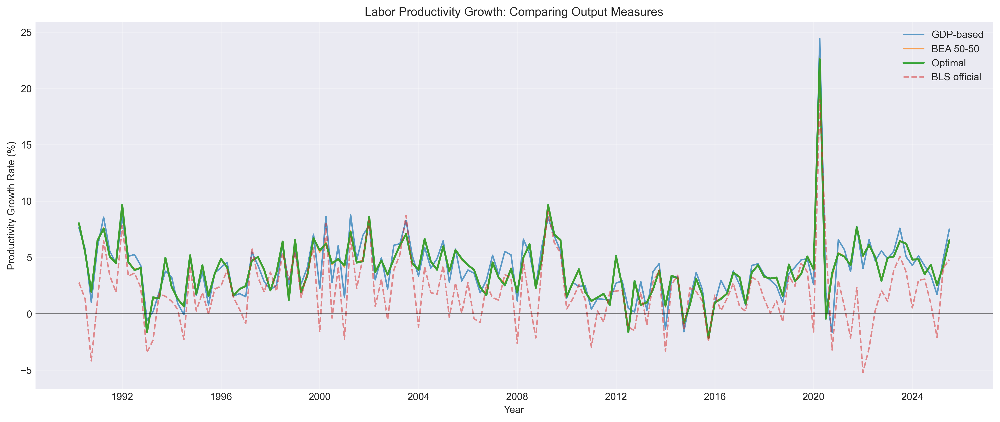
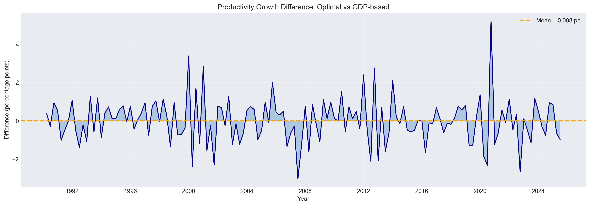

GDP and GDI measure the same thing from opposite ends of the national accounts, and they never quite agree. Standard practice either ignores GDI entirely or splits the difference with a 50-50 average, neither of which actually uses information about which series is more reliably measured. This project derives optimal weights from real-time revision data, applies them to construct an alternative output measure, and then uses it to build a labor productivity series to see whether the weighting choice matters in practice.
In theory, GDP and GDI should be identical. GDP counts all spending in the economy; GDI counts all income earned. They are two ways of measuring the same circular flow, and the accounting identity says they must be equal. In practice they diverge every single quarter because they are constructed from independent data sources with independent errors.
The question is what to do about it. Most researchers just use GDP and pretend GDI doesn't exist. The BEA publishes a 50-50 average. Neither approach is principled — the 50-50 split only makes sense if both series are equally reliable, and there is no particular reason to think that is true.
The signal extraction setup makes the problem concrete. If true output $Y_t^*$ is unobserved and each measure is just an error-contaminated signal, then the minimum-variance estimate of true output is a weighted average where the weights reflect relative measurement precision.
$Y_t^*$ is true output, unobserved. $u_t$ and $v_t$ are measurement errors with standard deviations $\sigma_u$ and $\sigma_v$ and correlation $\rho$. The goal is to estimate $Y_t^*$ as a linear combination of the two observables.
The weight $\lambda$ is chosen to minimize the variance of $(\hat{Y}_t - Y_t^*)$. The resulting optimal weight has a closed-form solution in terms of the error parameters.
When $\sigma_u = \sigma_v$, this reduces to $\lambda^* = 0.5$, recovering the BEA 50-50 as a special case. When GDI is measured more precisely ($\sigma_v < \sigma_u$), the optimal weight tilts toward GDI and $\lambda^* < 0.5$.
The 50-50 average is only optimal under a very specific assumption about measurement quality that nobody actually checks. This framework lets the data decide the weights instead.
Measurement error standard deviations are not directly observable, but revision history gives a reasonable proxy. If a series gets revised a lot relative to its initial estimate, that is evidence of higher measurement error in the initial release. FRED maintains real-time vintage data for both GDP and GDI going back to 1990, which makes it possible to compute the revision for each quarter directly.
I used the annualized log growth rate difference between the final reported value and the first release. That gives a quarterly time series of revisions for each measure, and the standard deviation of that series is the estimate of $\sigma$.
Applied identically to GDI. The standard deviation of this revision series, $\hat{\sigma}$, serves as the estimate of measurement error volatility. The same formula applies to GDI to obtain $\hat{\sigma}_v$.
| Parameter | Description | Estimate |
|---|---|---|
| $\sigma_u$ (GDP) | Revision std. deviation | 1.961 pp |
| $\sigma_v$ (GDI) | Revision std. deviation | 1.894 pp |
| $\rho$ | Correlation between revisions | 0.316 |
| $\lambda^*$ | Optimal weight on GDP | 0.474 |
| Weight on GDP | 47.4% | |
| Weight on GDI | 52.6% |
GDI comes out slightly more reliable than GDP over the 1990-2024 sample. The difference is not dramatic — 1.894 versus 1.961 percentage points in revision volatility — but it is enough to tilt the optimal weight away from 50-50. The result is 47.4% GDP and 52.6% GDI rather than a straight split.
Once you have the optimal output measure, you can build a labor productivity series from it and compare it against the GDP-based measure and the BLS official productivity release. The productivity growth rate is just annualized output per hour, computed as a log change.
On average the differences are small. The mean productivity growth rates across all four series are close, and the optimal measure sits right next to the BEA 50-50 average because the weights are close to even. But quarterly divergences can be meaningful, especially in the quarters where GDP and GDI are farthest apart.
The factor of 400 converts the quarterly log difference into an annualized percentage. Applied to GDP-based, BEA 50-50, optimal, and BLS official output measures to generate four comparable productivity series.


| Series | Mean | Std. Dev. |
|---|---|---|
| GDP-based | 3.91% | 2.89% |
| BEA 50-50 | 3.92% | 2.66% |
| Optimal | 3.92% | 2.66% |
| BLS Official | 2.00% | 3.08% |
| Period | GDP-Based (%) | Optimal (%) | Difference (pp) | N |
|---|---|---|---|---|
| Pre-crisis (1990–2007) | 4.21 | 4.22 | +0.016 | 71 |
| Financial crisis (2008–2009) | 5.32 | 5.44 | +0.117 | 8 |
| Recovery (2010–2019) | 2.21 | 2.22 | +0.010 | 40 |
| COVID era (2020–2024) | 5.60 | 5.57 | −0.027 | 20 |
Most of the time the two measures are nearly identical. The largest gaps show up during the dot-com contraction and the COVID quarters, which are also the periods when GDP and GDI disagree most. The 50-50 average performs reasonably well as a shortcut, but the revision-based approach is more defensible as a benchmark because it makes an explicit assumption about measurement quality rather than an implicit one.
| Method | Application |
|---|---|
| Signal Extraction | Derives optimal weights under minimum-variance criterion |
| Real-Time Vintage Data | FRED revision history used as proxy for measurement error |
| Revision Volatility Estimation | Standard deviation of final-minus-initial log growth differences |
| Optimal Weight Formula | Closed-form solution for $\lambda^*$ given $\sigma_u$, $\sigma_v$, and $\rho$ |
| Labor Productivity Construction | Annualized log change in output per hour; applied to all four output measures |
| Subperiod Comparison | Period-average differences across four economically distinct regimes |
The core framework draws on Nalewaik (2010), whose Brookings paper made the case that GDI historically predicts subsequent GDP revisions and should be weighted more heavily. The signal extraction setup traces back to the classical measurement error literature in econometrics. Real-time data methodology follows Croushore and Stark (2001), who laid out the case for using vintage releases when evaluating macroeconomic estimates. Data is sourced entirely from FRED using real-time vintage releases.